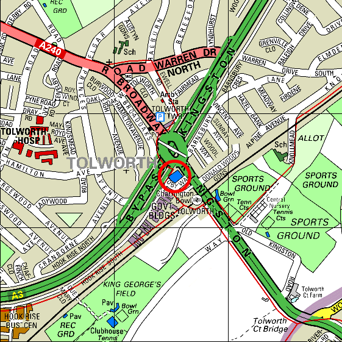
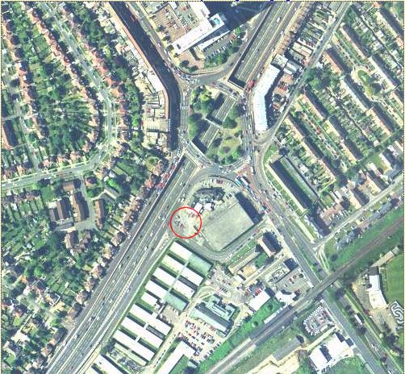

The "Toby Jug" public house is situated right next to the Tolworth roundabout. From the M25 turn off an Junction 10 and head along the A3 into London. It should only take you about 10 minutes along the A3 at the national speed limit before you reach Tolworth. Strictly adheare to the speed limit as the road is full of speed cameras and Police cars.
After going underneath some rather grimy underpasses you will bear left and a very large 1960's tower will loom on your left. This is Tolworth Tower. Take the exit which will be signposted as Kingston/Epsom/Ewell, the road number is A240. As you drive up the slip road get into the right hand lane as you will need to go all the way around the large roundabout. The roundabout has many sets of traffic lights on it so it's very difficult to stick together.
Go all the way around the roundabout and take the slip road back down onto the A3, this time heading South making sure that you are in the left hand lane. The entrance to the pub's car park is a turning on the left about 50m down this slip road so take care not to miss it.

You can see from the above aerial photograph that the Tolworth roundabout is quite large and is about four lanes wide. To the North of the roundabout you can see Tolworth Tower and to the South of the roundabout you can see a large rectagular building. This is the Charrington Bowl. The "Toby Jug" public house is between the roundabout and this building. I've circled the pub's car park.